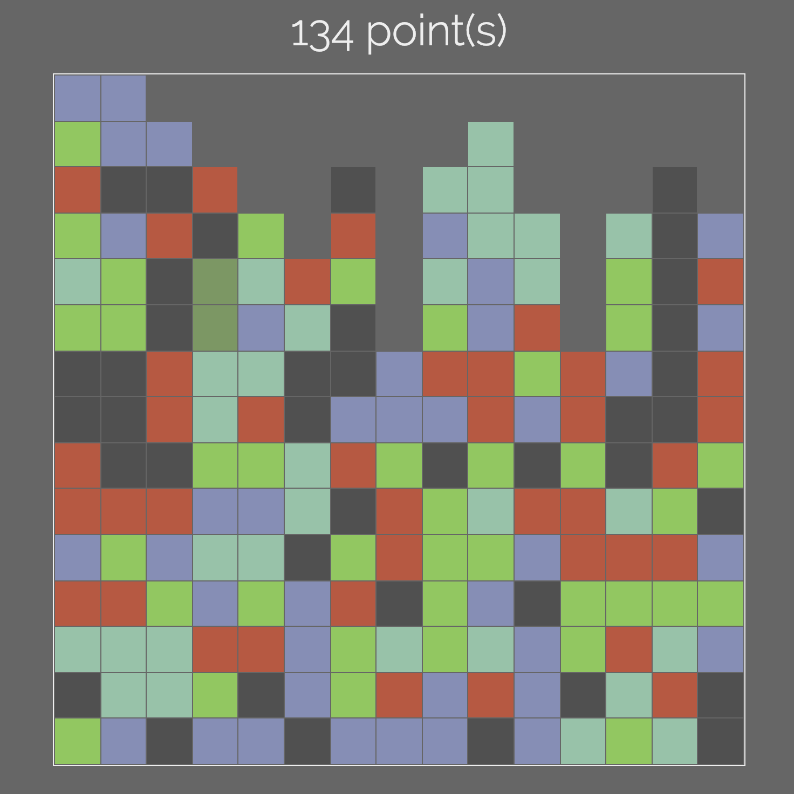
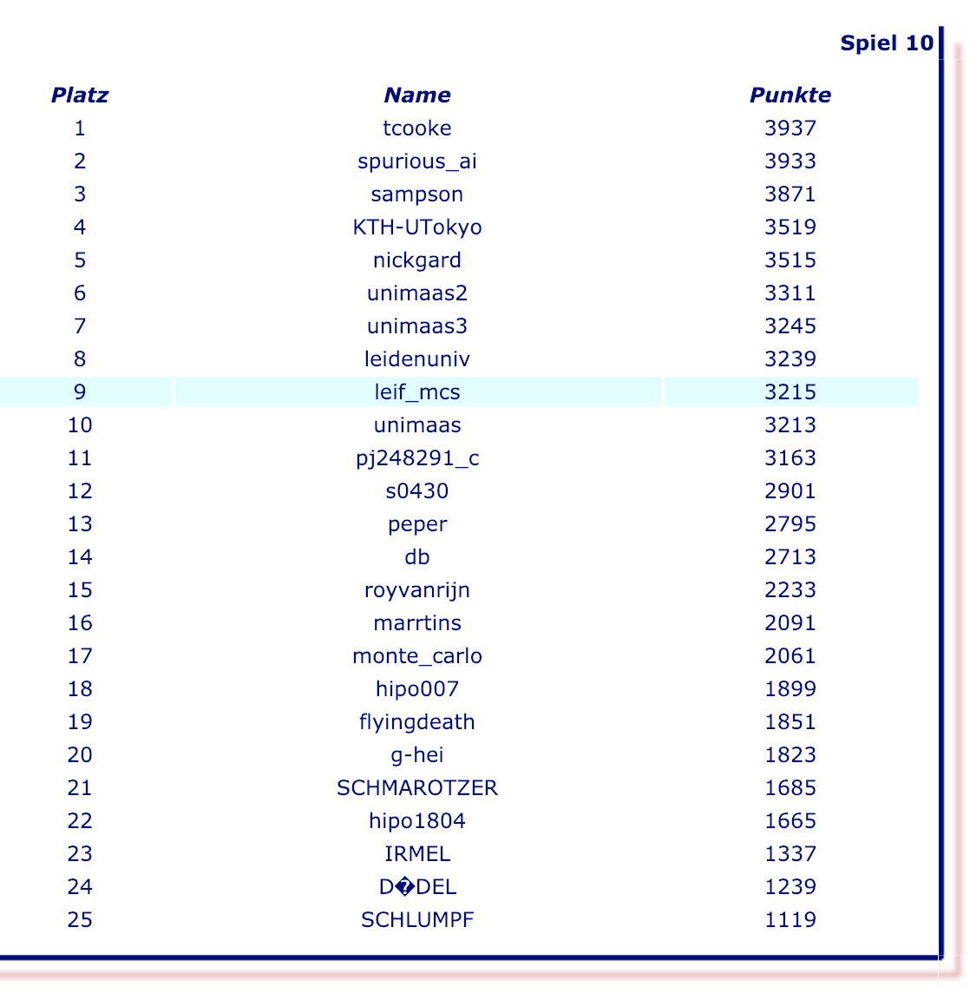

Leif Battermann
Algebraic API Design - Types, Functions, Properties
technicalIn this post we are going to explore the concept of algebraic API design which is based on types, pure functions, and the relationships between them known as domain rules or properties. We will do this based on a complete, self-contained example using Cats and Cats Effect and walk through the process of designing and implementing the domain of solving complex, deterministic single player games.
An API in this context describes the types and operations that a module exposes to the user.
SameGame is a deterministic single player game with perfect information. It has a game-tree complexity of . In other words it is extremely hard to solve. Exhaustive search strategies and traditional path finding algorithms do not perform well. Monte Carlo tree search which is based on random sampling on the other hand is a promising approach. We will go into more details on these concepts below.
But how can we implement this with functional programming? How can we express algorithms that are based on randomness, mutable state, and side effects in a purely functional way?
All the code in this post is interpreted with tut to make sure everything type-checks so that the reader gets a complete picture rather than simplistic code samples that don't actually work. As a downside some of the code is quite lengthy. Please note that it is not required to read and understand every single line.
Let's have a quick recap on the definition of algebraic structures and how they relate to programming and domain modeling.
An algebraic structure consists of:
A prototypical example of an algebraic structure from mathematics is a group. A concrete example of a group is the set of integers together with the addition operator denoted as that satisfy the group axioms.
A group can be defined in an abstract way like this:
There is an analogy in programming where:
The type classes provided by Cats follow exactly this pattern. Cats provides representations of many algebraic structures, one of which is Group[A]. It is defined by a type A and an operator combine:
trait Group[A] {
def empty: A
def combine(x: A, y: A): A
def inverse(a: A): A
}Group additionally has an empty and an inverse element. Closure is already enforced by the types of the operators. The axioms are expressed as properties.
E.g. for all objects x, y, z of type A, the (associative property) must hold:
def semigroupAssociative(x: A, y: A, z: A): IsEq[A] =
S.combine(S.combine(x, y), z) <-> S.combine(x, S.combine(y, z))We can create a concrete instance of Group[A], e.g. according to :
import cats.Group
implicit val group: Group[Int] = new Group[Int] {
def inverse(a: Int): Int = -a
def empty: Int = 0
def combine(x: Int, y: Int): Int = x + y
}The verification of the Group properties for the instance we created can be done with the help of discipline.
Please note that, while property-based testing is a very powerful tool, it is not the only way to verify properties. There are other methods like dependant types, formal verification, or example-based testing. However, property-based testing works really well and has a huge return on investment.
Algebraic design is not exclusively applicable to modeling algebraic structures from mathematics such as groups from the example above. We can use exactly the same technique to model the API of any domain.
The elements of algebraic structures can be related to domain driven design as follows:
Here is an overview of how algebraic structures, programming, and domain modeling relate to each other:
| Algebraic Structure | Programming | Domain Modeling |
|---|---|---|
| Sets | Algebraic data types | Types of entities/value objects |
| Operators | Functions | Business behavior |
| Axioms | Properties | Business rules |
Once we've defined the algebras that model the API of our domain, we can describe programs in terms of one or more of these algebras. Algebras in programming are also sometimes referred to as embedded domain specific languages (EDSLs). Programs that are composed of algebras or EDSLs are parametrically polymorphic and they know nothing about the algebras' concrete implementations other than that they satisfy certain properties.
Programs are therefore flexible and constrained at the same time. Flexible in the sense that they can be used with any lawful implementation of the given algebra. And constrained because they can only use the operators provided by the algebra to manipulate values of the types that the algebra is expressed with.
To give a crude, concrete example, a program is expressed in terms of the algebra of Group[A]. can only produce a result by using the operators combine and inverse on given input parameters of type A. Those parameters cannot be manipulated in any other way. Which leaves less room for mistakes and leads to correct programs. The caller of decides which concrete implementation of Group[A] they want to provide. Which makes reusable in multiple different contexts.
We could define a program as follows:
A program is a pure polymorphic function that uses algebras by combining their operators with other input parameters to produce a pure value.
The concrete implementation of an algebra is also know as the interpreter of the algebra. In the example from above the value group of type Group[Int] is an interpreter of the algebra of Group[A].
This might all sound a bit abstract and theoretical at first. In fact, talking about the concept of algebraic design is one thing, but applying this concept to a real business domain is another.
Let's look at a concrete and self-contained example.

We will write a program that finds solutions for deterministic single player games with a high game-tree complexity like SameGame.
SameGame is played on a board initially filled with blocks of 5 colors. The goal of the game is to remove as many blocks from the board as possible while maximising the score. See https://en.wikipedia.org/wiki/SameGame for detailed rules. You can play the game at js-games.de or https://samegame.surge.sh.
SameGame is a game with perfect information that is very difficult to solve. Given an initial starting position, we can construct a complete game-tree for SameGame as follows:
The total number of leafs is the game-tree complexity. The game-tree complexity of Tic-Tac-Toe e.g. is about . Tic-Tac-Toe is easy to solve by doing an exhaustive search. Whereas SameGame has a complexity of approximately . This makes it impossible to solve with a brute-force approach or other traditional algorithms in a reasonable amount of time. Smaller SameGame boards are relatively easy to solve. As the size of the board increases we observe a combinatorial explosion. The time required to find the best solution increases so rapidly that we hit a solvability limit.
When we encounter a combinatorial explosion, stochastic optimization algorithms come to the rescue. Instead of exploring the complete search tree these algorithms sample the search space and can find very good solutions. It is very unlikely, however, that they reach a global maximum and find the best solution in a reasonable amount of time.
A stochastic optimization algorithm that has successfully been employed to game play is known as Monte Carlo tree search. The basic idea of Monte Carlo tree search is to determine the most promising move based on random simulations at each node in the game-tree. In a random simulation the game is played out to the very end by selecting uniformly distributed random moves.
Here is a very simple version of a Monte Carlo tree search:
A way to improve on this basic algorithm is to add a nested (lower level) search at step 4. such that a random simulation is performed if the current level equals 1, otherwise a level - 1 search is performed.
That's all we need to know so let's implement this in a purely functional way using algebraic API design.
First we define a type that represents the game state:
final case class GameState[Move, BoardPosition, Score](
playedMoves: List[Move],
score: Score,
position: BoardPosition,
)
// defined class GameStateGameState consists of playedMoves (the list of moves that have been played), score (the current score), and position (the current board position).
With GameState we can now express a game algebra like this:
trait Game[F[_], Move, BoardPosition, Score] {
type GS = GameState[Move, BoardPosition, Score]
def applyMove(gameState: GS, move: Move): GS
def legalMoves(gameState: GS): List[Move]
def simulation(gameState: GS): F[GS]
}
// defined trait GameThe type alias GS only serves better readability.
Note that by parameterizing Game with Move, BoardPosition, and Score there are no dependencies. It is completely decoupled from any specific domain models. We can fully focus on the contract of the operations rather than having to deal with the implementation or cumbersome domain models.
Furthermore, Game is defined for any type constructor F[_] which we use to model effects. By making this type abstract we can defer the decision of which effects we need to a later point in time, respectively at the entry point of the application. Common effect types that could be used are IO, Task, Option, State, List etc. or combinations of them. Having an abstract effect type additionally serves better reusability in different contexts like in tests.
While applyMove and legalMoves have no effects, simulation returns an effect F. Even though one could think of implementations without effects, the implementation of simulation will use a generator for uniformly distributed random numbers. This can be done by describing a side effect or by using the State Monad. With an abstract effect we are able to choose a specific effect later and make simulation referentially transparent.
Just as an algebraic structure has certain axioms, we can also define properties for the Game algebra that all interpreters have to satisfy. These properties can be generic or they can be driven by the business rules of the domain.
It is often challenging to come up with meaningful properties for an algebra. However, more and better constraints allow significantly fewer possible implementations of the algebra. Which leads to correct programs because there is less room for errors.
For the sake of brevity let's consider only two properties:
m, m is either illegal or when applied leads to a new game state and it increments the number of played movesThese rules are expressed as predicates inside the companion object of Game like this:
object Game {
// let's follow the naming convention used by Cats and call this 'laws'
object laws {
import cats.Functor
import cats.implicits._
def simulationIsTerminal[F[_]: Functor, Move, BoardPosition, Score](
gameState: GameState[Move, BoardPosition, Score])(
implicit ev: Game[F, Move, BoardPosition, Score]): F[Boolean] =
ev.simulation(gameState).map(ev.legalMoves).map(_.isEmpty)
def legalMoveModifiesGameState[F[_], Move, BoardPosition, Score](
gameState: GameState[Move, BoardPosition, Score],
move: Move)(implicit ev: Game[F, Move, BoardPosition, Score]): Boolean = {
val legalMoves = ev.legalMoves(gameState)
val nextGameState = ev.applyMove(gameState, move)
!legalMoves.contains(move) ||
(nextGameState.position != gameState.position && nextGameState.playedMoves.length == gameState.playedMoves.length + 1)
}
}
}There is an additional constraint that we discover while implementing the predicates that define the properties of Game. F must have a Functor instance. Functor is the least powerful abstraction that allows us to access the value inside F and express the property related to simulation. In the next section we will see that the program we are going to write will imply additional constraints for F.
The properties of Game are tightly coupled to the algebra as any implementation must satisfy them. This is why they are defined inside the companion object of Game as part of the library code.
Later we will see how to implement property-based tests to verify the properties.
The Game properties are expressed solely in terms of the Game algebra. We have no idea how Game is implemented or what the types Move, BoardPosition, or Score look like. In a similar fashion we will only use the algebra to implement programs such as the search algorithm described above.
Before we do this, we will define another algebra that describes logging, simply for convenience. Especially during long running searches it is useful to be able to output intermediate results and search states:
import cats.Show
trait Logger[F[_]] {
def log[T: Show](t: T): F[Unit]
}
object Logger {
def apply[F[_]]()(implicit ev: Logger[F]): Logger[F] = ev
}With the two algebras Game and Logger we can now implement the nested Monte Carlo tree search.
import cats.Monad
// import cats.Monad
import cats.implicits._
// import cats.implicits._
def nestedSearch[F[_]: Monad: Logger, Move, Position, Score](
numLevels: Int,
level: Int,
gameState: GameState[Move, Position, Score])(
implicit g: Game[F, Move, Position, Score],
ord: Ordering[Score],
show: Show[GameState[Move, Position, Score]]): F[GameState[Move, Position, Score]] = {
val legalMoves = g.legalMoves(gameState)
for {
_ <- if (level == numLevels) Logger[F].log(gameState) else ().pure[F]
result <- if (legalMoves.isEmpty)
Monad[F].pure(gameState)
else
legalMoves
.traverse { move =>
if (level == 1) {
val nextGameState = g.applyMove(gameState, move)
g.simulation(nextGameState).map((move, _))
} else {
val nextState = g.applyMove(gameState, move)
nestedSearch[F, Move, Position, Score](numLevels, level - 1, nextState).map((move, _))
}
}
.map(_.maxBy(_._2.score))
.flatMap {
case (move, _) =>
nestedSearch[F, Move, Position, Score](numLevels, level, g.applyMove(gameState, move))
}
} yield result
}
// nestedSearch: [F[_], Move, Position, Score](numLevels: Int, level: Int, gameState: GameState[Move,Position,Score])(implicit evidence$1: cats.Monad[F], implicit evidence$2: Logger[F], implicit g: Game[F,Move,Position,Score], implicit ord: Ordering[Score], implicit show: cats.Show[GameState[Move,Position,Score]])F[GameState[Move,Position,Score]]This program describes the nested Monte Carlo tree search algorithm from above. The biggest difference is that this description is statically type checked by the Scala compiler. The effect of mutating the game state is modelled in a purely functional way with recursion. In fact, the state modifications could be modelled with the State Monad as well, but this makes things a bit more complicated especially when we try to parallelize the search.
Note that to implement the algorithm we need a Monad instance for F. Other than that we don't care what F exactly is.
Moreover, the nestedSearch function implies additional constraints for Score and GameState. We need to pass instances of Ordering[Score] (because we want to compare scores) and Show[GameState] (which we need for logging) as implicit parameters.
The game logic itself is defined in the object SameGame which is not shown here for the sake of brevity. You can find the implementation in this Gist.
With SameGame we are able write to an interpreter for Game that implements the SameGame rules. For the type constructor F[_] we will choose IO, so that we can model the side effect of a random number generator in a referentially transparent way. There are other options, like State e.g. that we will not discuss here. The point is that we are free to use whatever effect type serves our needs, as long as the implementation is pure and the properties of the Game algebra hold.
import cats.effect.IO
// import cats.effect.IO
import SameGame._
// import SameGame._
implicit val game: Game[IO, Position, SameGameState, Int] =
new Game[IO, Position, SameGameState, Int] {
def applyMove(gameState: GameState[Position, SameGameState, Int],
move: Position): GameState[Position, SameGameState, Int] = {
val gs = SameGame.applyMove(move, gameState.position)
GameState(move :: gameState.playedMoves, SameGame.score(gs), gs)
}
def legalMoves(gameState: GameState[Position, SameGameState, Int]): List[Position] =
SameGame.legalMoves(gameState.position)
def simulation(gameState: GameState[Position, SameGameState, Int])
: IO[GameState[Position, SameGameState, Int]] = {
val moves = legalMoves(gameState)
if (moves.isEmpty)
IO.pure(gameState)
else
IO(scala.util.Random.nextInt(moves.length))
.map(moves)
.map(applyMove(gameState, _))
.flatMap(simulation)
}
}
// game: Game[cats.effect.IO,SameGame.Position,SameGame.SameGameState,Int] = $anon$1@2fd961b3We must not forget to also implement an interpreter for Logger:
implicit val logger: Logger[IO] = new Logger[IO] {
def log[T: Show](t: T): IO[Unit] = IO(println(t.show))
}
// logger: Logger[cats.effect.IO] = $anon$1@32e5f76dAnd some Show instances to create nicely formatted outputs in a type-safe way:
implicit val showCell: Show[CellState] = Show.show {
case Empty => "-"
case Filled(Green) => "0"
case Filled(Blue) => "1"
case Filled(Red) => "2"
case Filled(Brown) => "3"
case Filled(Gray) => "4"
}
implicit val showMove: Show[Position] =
Show.show(p => show"(${p.col}, ${p.row})")
implicit val showList: Show[List[Position]] =
Show.show(_.map(_.show).mkString("[", ", ", "]"))
implicit val showBoard: Show[Board] =
Show.show(
_.columns
.map(col => col.cells.map(_.show).reverse)
.transpose
.map(_.mkString("[", ",", "]"))
.mkString("\n"))
implicit val showGame: Show[SameGameState] = Show.show {
case InProgress(board, score) => show"$board\n\nScore: $score (game in progress)"
case Finished(board, score) => show"$board\n\nScore: $score (game finished)"
}
implicit val showGameState: Show[GameState[Position, SameGameState, Int]] =
Show.show(t => show"""
|${t.position}
|Moves: ${t.playedMoves.reverse}
|""".stripMargin)Now that we have defined the interpreter for Game, it is time to ensure that Game properties are satisfied. We will do this with property-based testing and the library ScalaCheck. ScalaCheck uses a large number of randomly generated test cases to verify that the given properties hold.
import org.scalacheck.{Arbitrary, Gen}
import org.scalacheck.Gen._
import org.scalatest._
import org.scalatest.prop.PropertyChecksTo generate test cases, we have to define how to construct the test inputs. ScalaCheck provides numerous combinators that can be composed to create generators for our domain objects. Here are basic implementations of generators for GameState and Postion:
def colEmpty(size: Int): List[CellState] = List.fill(size)(Empty)
def colNonEmpty(size: Int): Gen[List[CellState]] =
for {
numFilled <- choose(1, size)
filled <- listOfN(numFilled, choose(0, 5).map(c => Filled(Color(c))))
} yield filled ++ colEmpty(size - filled.length)
def gameState(min: Int, max: Int): Gen[GameState[Position, SameGameState, Int]] =
for {
size <- choose(min, max)
numFilled <- choose(0, size)
nonEmpty <- listOfN(numFilled, colNonEmpty(size)).map(_.map(Column(_)))
empty <- listOfN(size - numFilled, const(colEmpty(size))).map(_.map(Column(_)))
score <- Arbitrary.arbitrary[Int]
} yield
GameState(
playedMoves = List.empty[Position],
position = SameGame.evaluateGameState(Board(nonEmpty ++ empty), score),
score = score
)
def move(boardSize: Int): Gen[Position] =
for {
col <- choose(0, boardSize)
row <- choose(0, boardSize)
} yield Position(col, row)Implementing the property checks is now straight forward:
class GameTests extends PropSpec with PropertyChecks with Matchers {
property("simulation is terminal") {
forAll(gameState(4, 8)) { gs =>
Game.laws
.simulationIsTerminal[IO, Position, SameGameState, Int](gs)
.unsafeRunSync()
}
}
property("legal move modifies game state") {
forAll(gameState(4, 8), move(8)) {
case (gs, m) =>
Game.laws
.legalMoveModifiesGameState[IO, Position, SameGameState, Int](gs, m)
}
}
}
// defined class GameTestsFinally we run our tests. In the Scala REPL this can be done like this:
run(new GameTests)
// GameTests:
// - simulation is terminal
// - legal move modifies game stateOf course, there are additional test strategies that can be employed. In particular, it is useful to test not only the interpreters, but to test the program, too. However, this goes beyond the scope of this post. For more information on testing in the world of functional programming please, refer to the links in the resource section below.
With cats.effect.IOApp we describe a purely functional program that performs a Monte Carlo tree search for a given initial board position. For demonstration purposes we use a smaller board of size to shorten the search time.
import cats.effect._
// import cats.effect._
object Main extends IOApp {
def run(args: List[String]): IO[ExitCode] = {
val board6x6 = List(
List(0, 2, 3, 1, 2, 1),
List(3, 0, 0, 3, 3, 2),
List(1, 2, 2, 2, 4, 2),
List(1, 1, 2, 4, 2, 2),
List(0, 0, 1, 3, 1, 4),
List(1, 4, 4, 0, 0, 3)
)
val initial =
GameState(playedMoves = List.empty[Position], score = 0, position = SameGame(board6x6))
val level = 4
nestedSearch[IO, Position, SameGameState, Int](level, level, initial)
.as(ExitCode.Success)
}
}
// defined object MainWhen we look at the code we cannot explicitly see that the instances of Game, Logger, Ordering, and Show are passed to the nestedSearch function as implicit parameters. They have been defined above and can be successfully resolved by the compiler because of the REPL style code, presented here. In a normal Scala application those instances are imported into the scope in the main method - at the entry point of the application.
nestedSearch returns a value of type IO[GameState[Position, SameGameState, Int]]. The return value can be ignored in this case because all the interesting information is logged by the program. IOApp takes care of and hides the execution of the IO.
The truncated sample output from the application:
[-,-,-,-,-,-]
[-,-,-,-,-,-]
[-,-,-,-,-,-]
[-,4,4,-,-,-]
[1,0,4,-,-,-]
[0,0,1,-,-,-]
Score: 16 (game in progress)
Moves: [(1, 1), (3, 2), (2, 0), (0, 2), (1, 0), (1, 0), (2, 3), (1, 3), (0, 2), (0, 1)]
[-,-,-,-,-,-]
[-,-,-,-,-,-]
[-,-,-,-,-,-]
[-,-,-,-,-,-]
[1,0,-,-,-,-]
[0,0,1,-,-,-]
Score: 17 (game in progress)
Moves: [(1, 1), (3, 2), (2, 0), (0, 2), (1, 0), (1, 0), (2, 3), (1, 3), (0, 2), (0, 1), (1, 2)]
[-,-,-,-,-,-]
[-,-,-,-,-,-]
[-,-,-,-,-,-]
[-,-,-,-,-,-]
[-,-,-,-,-,-]
[1,1,-,-,-,-]
Score: 18 (game in progress)
Moves: [(1, 1), (3, 2), (2, 0), (0, 2), (1, 0), (1, 0), (2, 3), (1, 3), (0, 2), (0, 1), (1, 2), (0, 0)]
[-,-,-,-,-,-]
[-,-,-,-,-,-]
[-,-,-,-,-,-]
[-,-,-,-,-,-]
[-,-,-,-,-,-]
[-,-,-,-,-,-]
Score: 1018 (game finished)
Moves: [(1, 1), (3, 2), (2, 0), (0, 2), (1, 0), (1, 0), (2, 3), (1, 3), (0, 2), (0, 1), (1, 2), (0, 0), (0, 0)]
The Monte Carlo tree search algorithm presented in this post has been intentionally kept simple. There are numerous different strategies of how to guide the tree search based on heuristics to influence the choice of moves which require multiple parameters that have to be fine tuned to maximize the outcomes.
A way to greatly improve on results of the algorithm presented here is to store best paths that were found in lower level searches which might otherwise be lost. We can apply domain-specific knowledge as well, as opposed to completely relying on random sampling. For SameGame e.g. there is a strategy called Tabu-Color which determines the most frequent color occurring at the start of each simulation. This predominat color is not allowed to be played because it is known to be advantageous to create large groups of blocks. Furthermore, parallelization can significantly shorten the search time.
Please refer to this GitHub repository where the techniques mentioned above are applied. While still simple this implementation leads to very promising results. The algorithm was able to discover a solution with a top ten score at js-games.de.
Another very promising strategy that can be combined with a Monte Carlo tree search is simulated annealing.
We have covered a lot of things. Some of the details might have been challenging depending on your prior knowledge of the topics introduced in this post. The reason for presenting such extensive examples is to provide complete and compiling code and to make a point that we do not only get great benefits from functional programming techniques, but that they are also feasible for real world problems.
These are the key takeaways:
The code has been interpreted with tut, using Scala 2.12.7, scalatest 3.0.5, scalacheck 1.14.0, and cats-effect 1.1.0.
Thanks to Jarrod Urban who did a very thorough review of this post.
Leif Battermann